THE HISTORY OF JAVASCRIPT
JavaScript is everywhere, and for the seventh year in a row,
it has been ranked the most commonly used programming language, with 67.8% of
developers employing it in 2019. Its ascent to the world's most popular programming
language is synonymous with the rise of the internet itself.
Created out of necessity, it is used to build 95.2% (1.52 billion)
of websites today, including some of the world's largest, like Facebook
and YouTube. Without it, we would not have popular and useful web apps
such as Google Maps and eBay.
So, without further ado, let's take a look at what JavaScript is, how and why it was created, and what's next for the language.
Source: ☛ Springboard by: T.J. DeGroat
WHAT IS JAVASCRIPT?
JavaScript is a scripting language that is one of the three core languages
used to develop websites. Whereas HTML and CSS give a website structure and
style, JavaScript lets you add functionality and behaviors to your website,
allowing your website's visitors to interact with content in many imaginative ways.
JavaScript is primarily a client-side language, meaning it runs on your
computer within your browser. However, more recently the introduction of
Node.js has allowed JavaScript to also execute code on servers.
Since its release, JavaScript has surpassed Java, Flash, and other
languages because it is relatively easy to learn, has a free and open
community, and, most importantly, is incredibly useful, allowing developers
to quickly create apps with audiences in the millions.
Source: ☛ Springboard by: T.J. DeGroat
JAVASCRIPT ORIGIN
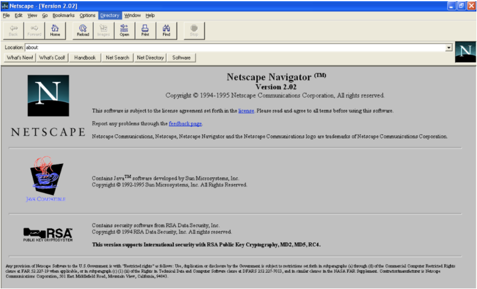Javascript Creator : Brendan Eich
The early to mid-1990s was an important time for the internet.
Key players like Netscape and Microsoft were in the midst of browser wars, with Netscape's
Navigator and Microsoft's Internet Explorer going head to head.
In September 1995, a Netscape programmer named Brendan Eich developed a
new scripting language in just 10 days. It was originally named Mocha, but
quickly became known as LiveScript and, later, JavaScript.
Source: ☛ Springboard by: T.J. DeGroat
JAVASCRIPT VS. JAVA
There's often some confusion about the two, but JavaScript and Java
(another popular programming language for data scientists after Python)
have almost nothing in common. The name JavaScript came from Netscape's
support of Java applets within its browser. Many say it was also a marketing
tactic to divert some attention from Java, which was the most buzzed-about
language at the time. To run Java programs, the code must be first compiled
into an executable form. On the other hand, JavaScript was created to be
interpreted at run time, making it much more dynamic (these days the boundary
of the two methods is a lot more blurred).
JavaScript didn't exactly get off to the best start. It didn't perform as well,
and those developing in Java considered JavaScript more of a “UI glue” to be
used mostly by designers and other non-engineers. But the reality is that having
a “glue” language allowed the internet to really flourish. Programmers could react
better to use events and compose interactive components. And due to that, JavaScript
spread like wildfire and very quickly became the lingua franca of the web.
ECMAScript Is Born
In 1997, due to JavaScript,s rapid growth, it became clear that the language would
need to be properly maintained and managed. Therefore, Netscape handed the job of
creating a language specification to the European Computer Manufacturers Association
(ECMA), a body founded with the goal of standardizing computing. The ECMA specifications
were labeled ECMA-262 and ECMAScript languages included JavaScript, JScript, and ActionScript.
Between 1997 and 1999, ECMA-262 had three revisions, but nearly 10 years later,
version 4 was abandoned due to differing opinions on the direction of the language
and its proposed features. Interestingly, many of these controversial features,
such as generators, iterators, and destructuring assignments, have been included
in more recent ECMAScript specifications.
The Paper That Started a Movement
The year 2005 proved to be a big one for JavaScript. A paper released by Jesse James Garrett
introduced Ajax, a revolutionary suite of technologies that included JavaScript. Ajax vastly
improved user experience by allowing web pages to feel more like native desktop apps. This
really pushed JavaScript into the spotlight as a professional programming language.
This paper is considered to be one of the founding backbones of the JavaScript community.
At the time, JavaScript had many challenges, including its verbose nature when doing simple
things and the incompatibility issues between browsers. The community responded with large
and popular JavaScript frameworks and libraries, such as Dojo and Mootools and jQuery.
The section below introduces some aspects of the core language and offers an opportunity to play with a few browser API features too. Have fun!
A Hello world! example
JavaScript is one of the most popular modern web technologies! As your JavaScript skills grow,
your websites will enter a new dimension of power and creativity.
However, getting comfortable with JavaScript is more challenging than getting comfortable
with HTML and CSS. You may have to start small, and progress gradually. To begin, let's
examine how to add JavaScript to your page for creating a Hello world! example.
(Hello world! is the standard for introductory programming examples.)
Source: ☛ MDN Web Docs
-
Go to your test site and create a new folder named scripts. Within the scripts folder,
create a new text document called main.js,
and save it.
- In your index.html file, enter this code on a new line, just before the closing </body> tag 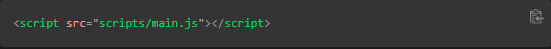
-
This is doing the same job as the <link>
element for CSS. It applies the JavaScript to the page, so it can have an effect on the HTML (along with the CSS,
and anything else on the page).
- Add this code to the main.js file: 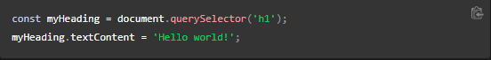
- Make sure the HTML and JavaScript files are saved. Then load index.html in your browser. You should see something like this:
WHAT HAPPENED?
The heading text changed to Hello world! using JavaScript.
You did this by using a function called querySelector()
to grab a reference to your heading, and then store it in a variable called
myHeading.
This is similar to what we did using CSS selectors. When you want to do something to an element, you need to select it first.
Following that, the code set the value of the myHeading
variable's textContent
property (which represents the content of the heading) to Hello world!.
LANGUAGE BASICS CRASH COURSE
To give you a better understanding of how JavaScript works, let's explain some of
the core features of the language. It's worth noting that these features are common
to all programming languages. If you master these fundamentals, you have a head start
on coding in other languages too!
VARIABLES
Variables are containers that store values. You start by declaring a variable with the let keyword, followed by the name you give to the variable:
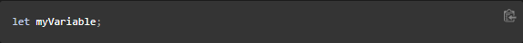
A semicolon at the end of a line indicates where a statement ends. It is only
required when you need to separate statements on a single line. However, some
people believe it's good practice to have semicolons at the end of each statement.
There are other rules for when you should and shouldn't use semicolons. For more
details, see Your Guide to Semicolons in JavaScript.
You can name a variable nearly anything, but there are some restrictions.
(See this section about naming rules.) If you are unsure, you can check your
variable name to see if it's valid.
JavaScript is case sensitive. This means myVariable is not the same as myvariable.
If you have problems in your code, check the case!
After declaring a variable, you can give it a value:
Source: ☛ MDN Web Docs
Also, you can do both these operations on the same line:
You retrieve the value by calling the variable name:
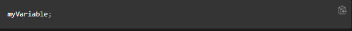After assigning a value to a variable, you can change it later in the code:
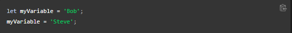Note that variables may hold values that have different data types:

Source: ☛ MDN Web Docs
So why do we need variables? Variables are necessary to do anything interesting in programming. If values couldn't change, then you couldn't do anything dynamic, like personalize a greeting message or change an image displayed in an image gallery.
COMMENTS
Comments are snippets of text that can be added along with code. The browser ignores text marked as comments. You can write comments in JavaScript just as you can in CSS:
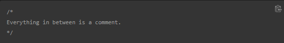If your comment contains no line breaks, it's an option to put it behind two slashes like this:
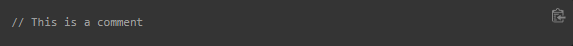OPERATORS
An operator is a mathematical symbol that produces a result based on two values (or variables). In the following table, you can see some of the simplest operators, along with some examples to try in the JavaScript console.
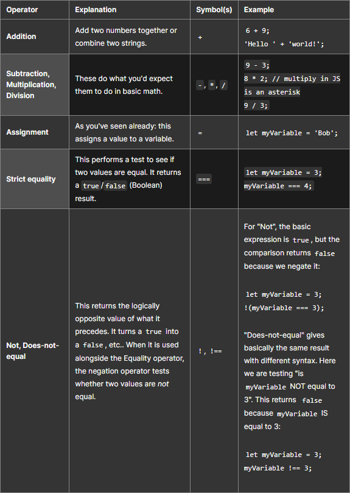
Source: ☛ MDN Web Docs
There are a lot more operators to explore, but this is enough for now. See Expressions and operators for a complete list.
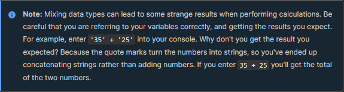CONDITIONALS
Conditionals are code structures used to test if an expression returns true or not. A very common form of conditionals is the if ... else statement. For example:
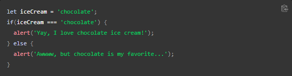The expression inside the if( ... ) is the test. This uses the strict equality operator (as described above) to compare the variable iceCream with the string chocolate to see if the two are equal. If this comparison returns true, the first block of code runs. If the comparison is not true, the second block of code—after the else statement—runs instead.
FUNCTION
Functions are a way of packaging functionality that you wish to reuse. It's possible to define a body of code as a function that executes when you call the function name in your code. This is a good alternative to repeatedly writing the same code. You have already seen some uses of functions. For example:
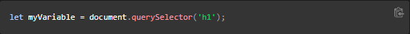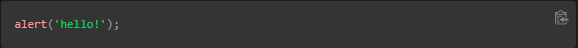
These functions, document.querySelector
and alert, are built into the browser.
If you see something which looks like a variable name, but it's followed by parentheses—
( ) —it
is likely a function. Functions often take arguments:
bits of data they need to do their job. Arguments go inside the parentheses, separated by commas if there is more than one argument.
For example, the alert()
function makes a pop-up box appear inside the browser window, but we need to give it a string as an argument
to tell the function what message to display.
You can also define your own functions. In the next example, we create a simple function which
takes two numbers as arguments and multiplies them:
Source: ☛ MDN Web Docs
Try running this in the console; then test with several arguments. For example:
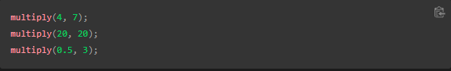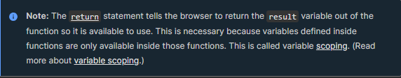
EVENTS
Real interactivity on a website requires event handlers. These are code structures that listen for activity in the browser, and run code in response. The most obvious example is handling the click event, which is fired by the browser when you click on something with your mouse. To demonstrate this, enter the following into your console, then click on the current webpage:
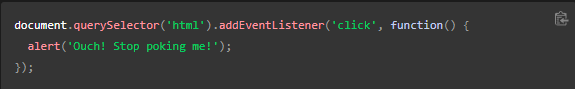
There are many ways to attach an event handler to an element. Here we select the
<html>
element. We then call its addEventListener()
function, passing in the name of the event to listen to
('click') and a function to
run when the event happens.
Note that
is equivalent to
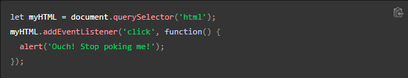
It's just shorter.
The functions we just passed to addEventListener() here are called anonymous functions, because they don't have a name. There's an alternative way of writing anonymous functions, which we call an arrow function. An arrow function uses () => instead of function ():
Source: ☛ MDN Web Docs
SUPERCHARGING OUR EXAMPLE WEBSITE
With this review of JavaScript basics completed (above), let's add some new features to our example site.
Before going any further, delete the current contents of your
main.js
file — the bit you added earlier during the "Hello world!" example — and save the empty file.
If you don't, the existing code will clash with the new code you are about to add.
ADDING AN IMAGE CHANGER
In this section, you will learn how to use JavaScript and DOM API features to alternate the display of one of two images. This change will happen as a user clicks the displayed image.
-
Choose an image you want to feature on your example site. Ideally, the image
will be the same size as the image you added previously, or as close as possible.
-
Save this image in your images folder.
-
Rename the image firefox2.png.
- Add the JavaScript below to your main.js file. 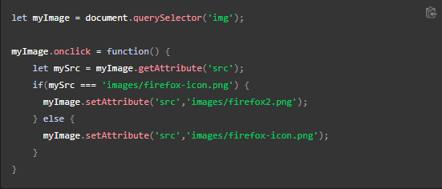
-
Save all files and load index.html
in the browser. Now when you click the image, it should change to the other one.
This is what happened. You stored a reference to your <img> element in the myImage variable. Next, you made this variable's onclick event handler property equal to a function with no name (an "anonymous" function). So every time this element is clicked:
-
The code retrieves the value of the image's
src attribute.
-
The code uses a conditional to check if the src
value is equal to the path of the original image:
-
If it is, the code changes the src
value to the path of the second image, forcing the other image to be loaded inside the
<img> element.
- If it isn't (meaning it must already have changed), the src value swaps back to the original image path, to the original state.
ADDING A PERSONALIZED WELCOME MESSAGE
Next, let's change the page title to a personalized welcome message when the user first visits the site. This welcome message will persist. Should the user leave the site and return later, we will save the message using the Web Storage API. We will also include an option to change the user, and therefore, the welcome message.
- In index.html, add the following line just before the <script> element:
- In main.js, place the following code at the bottom of the file, exactly as it is written. This takes references to the new button and the heading, storing each inside variables: 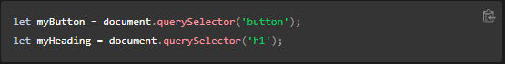
-
Add the function below to set the personalized greeting. This won't do anything yet, but this will change soon.
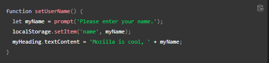 -
Add the
if ... else block (below). We could call this initialization code, as it structures
the app when it first loads.
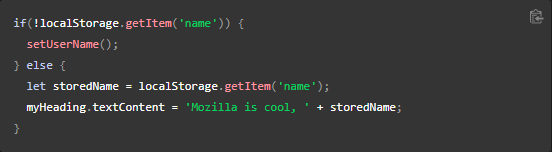 -
Put this onclick
event handler (below) on the button. When clicked,
setUserName()
runs. This allows the user to enter a different name by pressing the button.
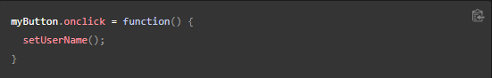
The setUserName() function contains a prompt() function, which displays a dialog box, similar to alert(). This prompt() function does more than alert(), asking the user to enter data, and storing it in a variable after the user clicks OK. In this case, we are asking the user to enter a name. Next, the code calls on an API localStorage, which allows us to store data in the browser and retrieve it later. We use localStorage's setItem() function to create and store a data item called 'name', setting its value to the myName variable which contains the user's entry for the name. Finally, we set the textContent of the heading to a string, plus the user's newly stored name.
This first line of this block uses the negation operator (logical NOT, represented by the !) to check whether the name data exists. If not, the setUserName() function runs to create it. If it exists (that is, the user set a user name during a previous visit), we retrieve the stored name using getItem() and set the textContent of the heading to a string, plus the user's name, as we did inside setUserName().
A USER NAME OF NULL?
When you run the example and get the dialog box that prompts you to enter your user name,
try pressing the Cancel button. You should end up with a title that reads Mozilla is cool,
null. This happens because—when you cancel the prompt—the value is set as
null.
Null is a special value in JavaScript that refers to the absence of a value.
Also, try clicking OK without entering a name. You should end up with a title that reads
Mozilla is cool, for fairly obvious reasons.
To avoid these problems, you could check that the user hasn't entered a blank name.
Update your setUserName() function to this:
In human language, this means: If myName has no value, run setUserName() again from the start. If it does have a value (if the above statement is not true), then store the value in localStorage and set it as the heading's text.
Source: ☛ MDN Web Docs
CONCLUSION
If you have followed all the instructions in this article, you should end up with a page that looks something like the image below.
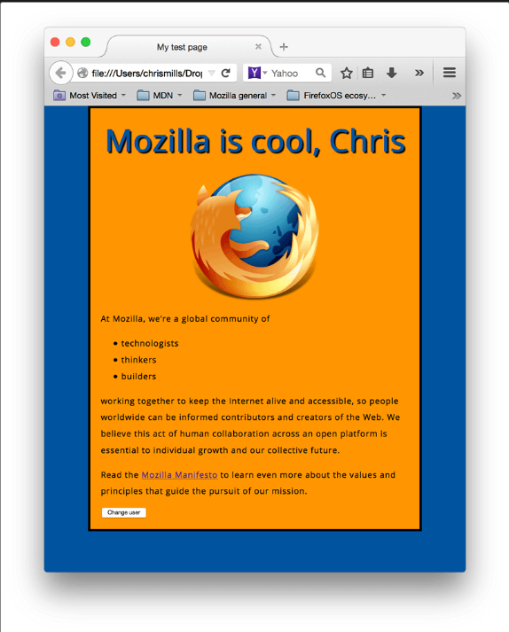Source: ☛ MDN Web Docs